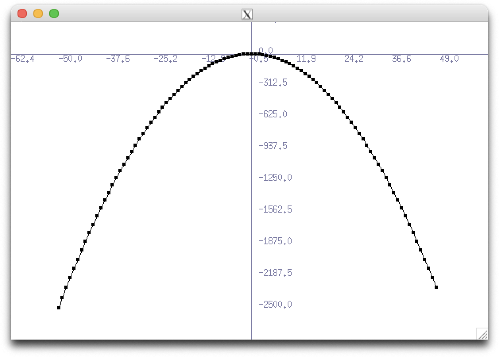
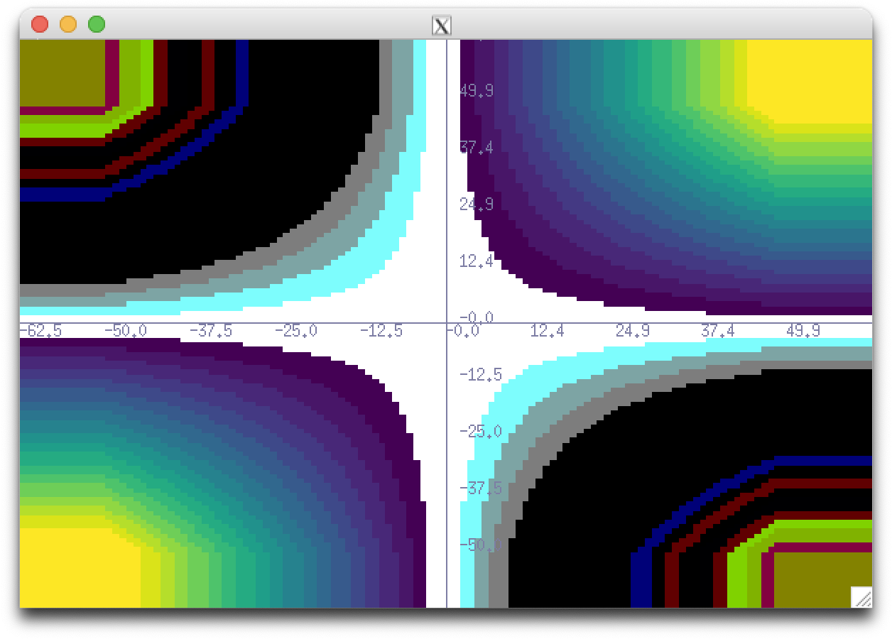
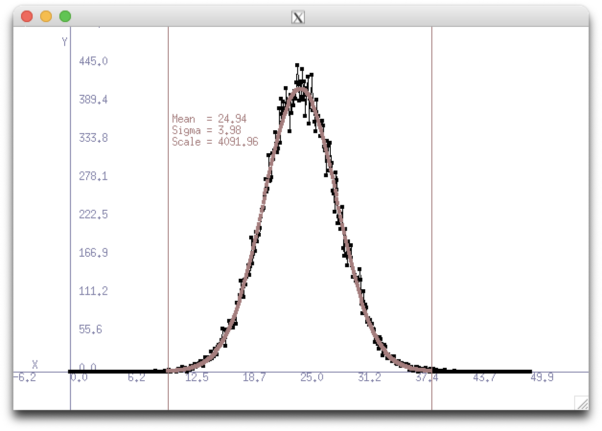

First things first, here is the link to the HistoGUI repository.
HistoGUI is a graphing package I wrote from scratch. It utilises the XLib library to draw data in the easiest way possible. Developed over several months, the package can handle several use-cases and has been used in several settings. Additionally, I am still actively improving it!
While most programming languages have fairly widely accepted graphing tools (think matplotlib for python), one of the major languages for use in data analysis, C++, does not.
With a background in high energy physics, the main analysis and plotting tools I have used are all contained in ROOT - the data analysis framework used in CERN and all major labs. ROOT is fantastic and can do so much more than just plot data. However, because of this, the package is large and unweildy. Installation can take a long time and is hardly warrented for most machines. Additionally, the integration of ROOT into real-time plotting is non-trivial and an uncommon usecase.
As a result, along with some friends, I started to develop an alternative analysis package HistoMaster. This package was mainly focussed on reading and analysing the compressed ROOT files, a task it has only been partially successful at. However, in the process of developing this, I realised I needed a native C++ plotter. It was here that I started working on HistoGUI.
HistoGUI solves the major issues that come with displaying data in C++. The graphics are provided by interfacing directly with X11 protocols. It is fairly uncommon to come across Linux computers without X11 support, and any user who wishes to do anything over an ssh connection will have it installed also. This safe bet means usage is very streamlined, with only the header file needing to be referenced in the C++ script. The HistoGUI object can be called, filled with data, and then drawn through some very simple commands. Windows are interactive and can be used to trigger an update of the data through a user defined function. This allows for autorefreshing of the data and a live-plotting option. Native low level fitting has been implemented, enabling fast data analysis.
Additionally, by interfacing with X11 natively, the program is pretty robust to ssh connections, with it indroducing very little response delay. This is particularly useful as one of the major usecases is as data monitoring on a aquesition PC. These PCs are rarely burdoned with ROOT and mainly provide a real delay to real-time data monitoring. However, HistoGUI can help with this.
Just go to the github repository and download. You can see some of the capabilities by running the example, this also includes a description of the compilation flag needed to make your scripts work. If you do not have X11 installed, you can do so easily for all operating systems. For Mac I use XQuartz - this can also be installed using homebrew etc.
  